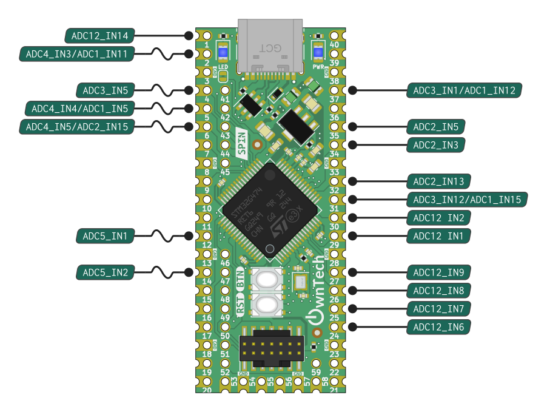
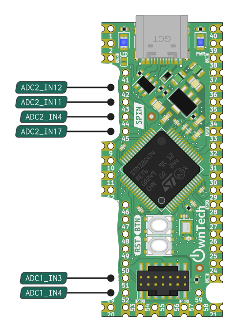
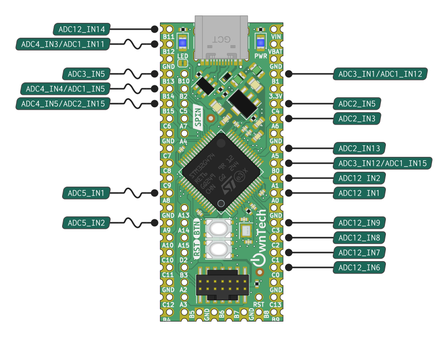
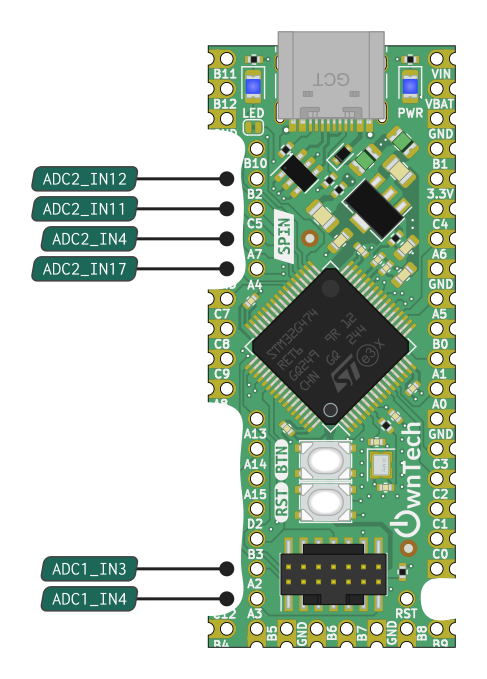
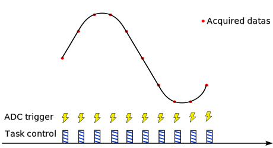
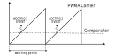

An ADC, or Analog-to-Digital Converter, is a device that turns analog signals, like sound or temperature, into digital data that a computer or microcontroller can understand. It measures the analog voltage and converts it into a digital value that can be used by digital systems for processing, storage, or display.
Warning
The ADC API is an advanced interface provided for users with technical background. For most data acquisition tasks, use the Data API which provides a more user-friendly and higher-level entry point.
Pinout
SPIN boards have 5 independant ADC units. Each unit can measure multiple analog signals, using a measurment sequence.
Capabilities
Each ADC channel has : - 12 bit resolution: 0b to 4096b - Sensing full scale: 0V to 2.048V - Sampling time down to 42ns
 
 
Info
- ADC12 means that the pin can be used either as ADC1 or ADC2
- INx means that it is channel x.
Include
Initialization sequence
Note
- Link an adc trigger event to the ADC
spin.adc.configureTriggerSource(ADCx, TRIG) - Define acquisition sequence by enabling adc channel :
spin.adc.enableChannel(ADCx, channelx) - trigger an adc
data.triggerAcquisition() - Retrieve value :
data.getLatest(ADCx, pinx)
1. Make sure PWM engine is initialized
2. Link an adc trigger event to the ADC spin.adc.configureTriggerSource(ADCx, TRIG)
3. Set continuous/discontinuous conversion mode. Optional : spin.adc.configureDiscontinuousMode(x, 0/1)
4. Define acquisition sequence by enabling adc channel : spin.adc.enableChannel(ADCx, channelx)
6. Start data dispatching to get acquired values data.start()
7. Retrieve value : data.getLatest(ADCx, pinx)
Example
/* PWM unit initialization */
spin.pwm.setModulation(PWMA, UpDwn);
spin.pwm.setAdcEdgeTrigger(PWMA, EdgeTrigger_up);
spin.pwm.setAdcDecimation(PWMA, 1);
spin.pwm.setMode(PWMA, VOLTAGE_MODE);
spin.pwm.initUnit(PWMA);
spin.pwm.setDeadTime(PWMA, 200,200);
spin.pwm.setAdcTrigger(PWMA, ADCTRIG_1);
spin.pwm.enableAdcTrigger(PWMA);
spin.pwm.setDutyCycle(0.5);
spin.pwm.startDualOutput(PWMA);
/* ADC initialization */
spin.adc.configureTriggerSource(1, hrtim_eev1);
spin.adc.configureDiscontinuousMode(1,1);
spin.adc.enableChannel(1, 30);
data.start();
float32_t adc_value = data.getLatest(1, 30);
Channel sequence
Each ADC unit can measure multiple analog signal. This works by defining an acquisition sequence.
Tip
By default the aquisition sequence is in continuous mode. It means than one trigger will trigger all the sequence of acquisition. This can be changed using Discontinuous Mode
Example
spin.adc.enableChannel(1, 1)
In this example, for each trigger, the ADC1 will measure channel 1.
Note
Sequence order is given by spin.adc.enableChannel() order.
Software triggered

A software trigger for an ADC is a command or signal generated by the software to start the ADC conversion process. Instead of using a hardware signal or event to initiate the conversion, the ADC is triggered by software instructions, allowing for precise control and synchronization with other software processes or events. For example this trigger command can be generated from a high speed control task.
Synchronous with PWMs
Software triggers is generally speaking not suitable for applications that requires precise timing. Sometimes measurement have to be taken at a specific time, in interaction with the control signal.
Info
This kind of acquisition have a side benefit. It operates in the background and does not interfer with software. It means that periodical sampling will not interrupt code execution.
The trigger is the PWM peripheral, the ADC performs the conversion and place the result in an output buffer, the output buffer is directly placed in memory by a DMA. A rather complex software mechanics execute periodically and serve each measurement in a dedicated memory space. The periodical routine is executed at the beggining of the controlTask.
Info
Synchronous measurement require having a controlTask running.
Tip
This page informs on how to parameters the triggering of the measurement To retrieve measurement values please refer to DataAPI
The section below explain how to synchronize measurements with control signals.
Note
These features are available for ADC1 and ADC2.
The different event and trigger of ADC/HRTIM
You might have seen that there are differents variables referencing adc trigger :
There ishrtim_eevx or ADCTRIG_x, let's see the role of each of them.
ADCTRIG_x
In the PWM API, four signals can serve as ADC triggers, initiating ADC conversions: ADC_TRIG1, ADC_TRIG2, ADC_TRIG3, and ADC_TRIG4.
The PWM is produced by a carrier (see here) by using a comparator to compare a specific constant value with the carrier, we can generate an event when enabling a trigger on the PWM. For instance :
We are enabling and linking ADCTRIG_1 to PWMA. That means that when the comparator value and the carrier value of the PWMA we can generate an event from ADCTRIG_1 that can be used to start an ADC conversion :

The comparator value can be adjusted using the function spin.pwm.setAdcTriggerInstant(PWMA, 0.5). For example, setting it to 0.5 means triggering an event halfway through the switching period, initiating an ADC conversion.
hrtim_eevx
An ADC conversion can be initiated either by software (via a function) or hardware through an external event. Numerous external events exist, but some are specifically related to PWM: hrtim_eev1, hrtim_eev2, hrtim_eev3, and hrtim_eev4.
Each of these external events is associated with events generated by ADCTRIG_x. For instance, hrtim_eev1 is linked to ADCTRIG_1, and so on.
spin.pwm.setAdcTrigger(PWMA, ADCTRIG_1);
spin.pwm.enableAdcTrigger(PWMA);
spin.adc.configureTriggerSource(1, hrtim_eev1);
Source ADC and PWM channel
ADC1 and ADC2 can be associated with PWM channels at will.
function configureDiscontinuousMode
Set the discontinuous count for an ADC. By default, ADCs are not in discontinuous mode.
Applied configuration will only be set when ADC is started. If ADC is already started, it must be stopped then started again.
Parameters:
adc_numberNumber of the ADC to configure.discontinuous_countNumber of channels to acquire on each trigger event. 0 to disable discontinuous mode (default).

Modulation impact
Note
Hardware trigger depends on PWM modulation.

Rising Edge / Falling edge
Note
This only applies to center aligned modulation.

Measurment trigger instant
Trigger timing can be defined or changed dynamically.

Continuous / Discontinuous sequence
Note
This is relevant if more than one measurement is taken with the same ADC.
Number of PWM period between acquisition
Note
This is relevant if more than one measurement is taken with the same ADC.

API Reference
Class AdcHAL
Handles the ADC for the spin board. More...
#include <AdcHAL.h>
Public Functions
| Type | Name |
|---|---|
| void | configureDiscontinuousMode (uint8_t adc_number, uint32_t dicontinuous_count) Set the discontinuous count for an ADC. By default, ADCs are not in discontinuous mode. |
| void | configureTriggerSource (uint8_t adc_number, adc_ev_src_t trigger_source) Change the trigger source of an ADC. By default, triggger source for ADC 1/2 is on HRTIM1, and ADC 3/4 is software-triggered. |
| void | disableChannel (uint8_t adc_number, uint8_t channel) Removes a channel from the list of channels that are acquired by an ADC. |
| void | enableChannel (uint8_t adc_number, uint8_t channel) Add a channel to the list of channels to be acquired for an ADC. The order in which channels are acquired is determined by the order in which they are enabled. |
| void | enableDma (uint8_t adc_number, bool use_dma) ADC DMA mode configuration. Enables DMA and circular mode on an ADC. |
| uint32_t | getEnabledChannelsCount (uint8_t adc_number) Returns the number of enabled channels for an ADC. |
| void | startAllAdcs () Start all configured ADCs. |
| void | stopAllAdcs () Stop all configured ADCs. |
| void | triggerSoftwareConversion (uint8_t adc_number, uint8_t number_of_acquisitions) Triggers a conversion on an ADC which is configured as software triggered. |
Detailed Description
Note:
Use this element to call functions linked to the ADC for the SPIN board
Public Functions Documentation
function configureDiscontinuousMode
Set the discontinuous count for an ADC. By default, ADCs are not in discontinuous mode.
Applied configuration will only be set when ADC is started. If ADC is already started, it must be stopped then started again.
Parameters:
adc_numberNumber of the ADC to configure.discontinuous_countNumber of channels to acquire on each trigger event. 0 to disable discontinuous mode (default).
function configureTriggerSource
Change the trigger source of an ADC. By default, triggger source for ADC 1/2 is on HRTIM1, and ADC 3/4 is software-triggered.
Applied configuration will only be set when ADC is started. If ADC is already started, it must be stopped then started again.
Parameters:
adc_numberNumber of the ADC to configuretrigger_sourceSource of the trigger
function disableChannel
Removes a channel from the list of channels that are acquired by an ADC.
Note:
If a channel has been enabled multiple times, then only the first occurence in the list will be removed.
Applied configuration will only be set when ADC is started. If ADC is already started, it must be stopped then started again.
Parameters:
adc_numberNumber of the ADC to configure.channelNumber of the channel to to no longer be acquired.
function enableChannel
Add a channel to the list of channels to be acquired for an ADC. The order in which channels are acquired is determined by the order in which they are enabled.
Applied configuration will only be set when ADC is started. If ADC is already started, it must be stopped then started again.
Parameters:
adc_numberNumber of the ADC to configure.channelNumber of the channel to to be acquired.
function enableDma
ADC DMA mode configuration. Enables DMA and circular mode on an ADC.
Applied configuration will only be set when ADC is started. If ADC is already started, it must be stopped then started again.
Parameters:
adc_numNumber of the ADC on which to enable DMA.use_dmaSet to true to use DMA for this ADC, false to not use it (default).
function getEnabledChannelsCount
Returns the number of enabled channels for an ADC.
Parameters:
adc_numberNumber of the ADC to fetch.
Returns:
Number of enabled channels on the given ADC.
function startAllAdcs
function stopAllAdcs
function triggerSoftwareConversion
Triggers a conversion on an ADC which is configured as software triggered.
Note:
Software trigger is default for all ADCs unless configured differently by the user or another module.
Parameters:
adc_numberNumber of the ADC to fetch.number_of_acquisitionsNumber of channels to acquire.
The documentation for this class was generated from the following file docs/core/zephyr/modules/owntech_spin_api/zephyr/src/AdcHAL.h